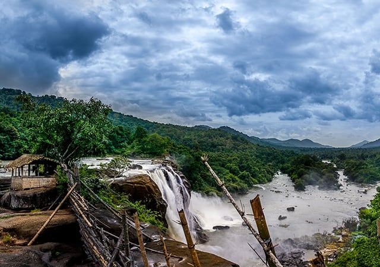

Hot spots
Known to be one of the most pious tourist destinations in Kerala, this scenic city is dotted with pious temples, and is a home to some of the most gala festivals in the entire state. The city also serves as an ideal destination to learn Hindu religion.

Athirappilly Waterfalls

GuruvayoorSreeKrishnaTemple

Kerala Kalamandalam